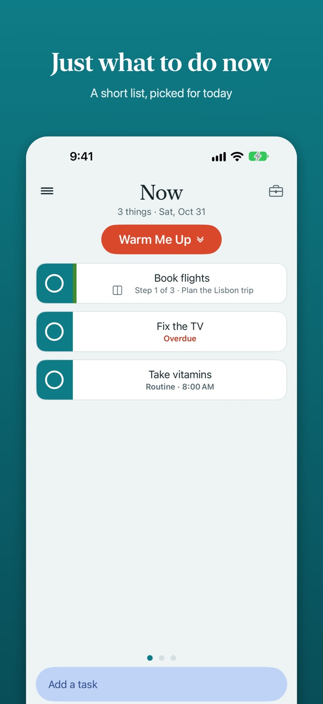
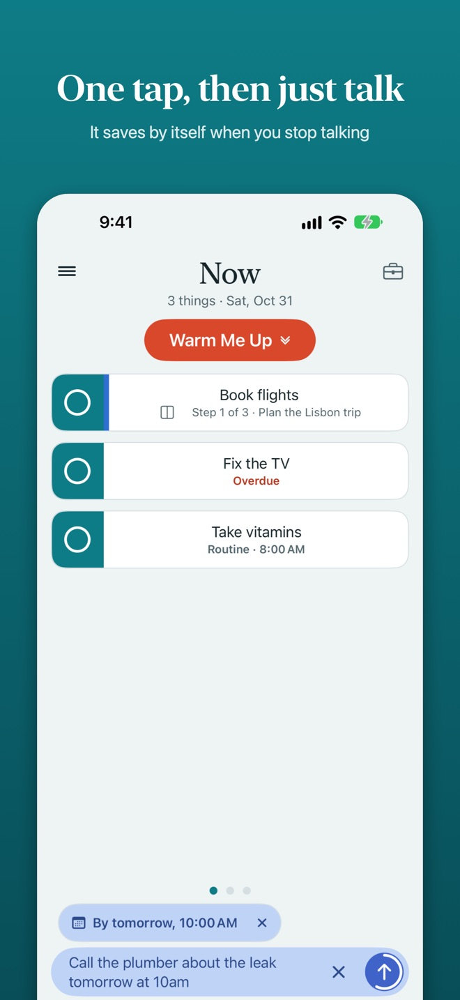
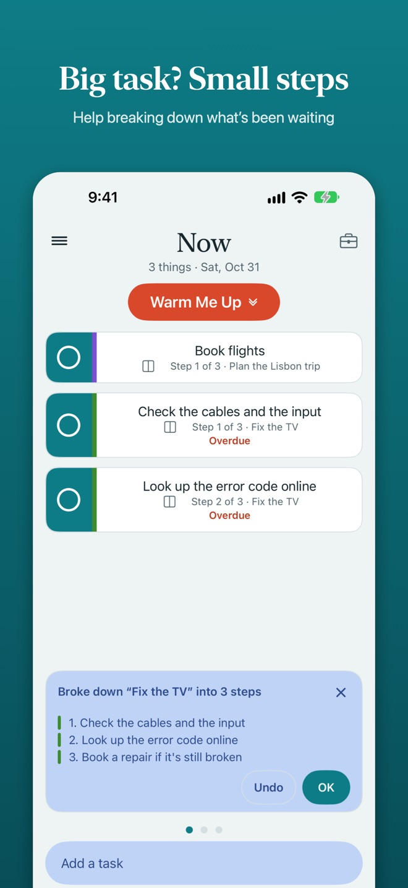
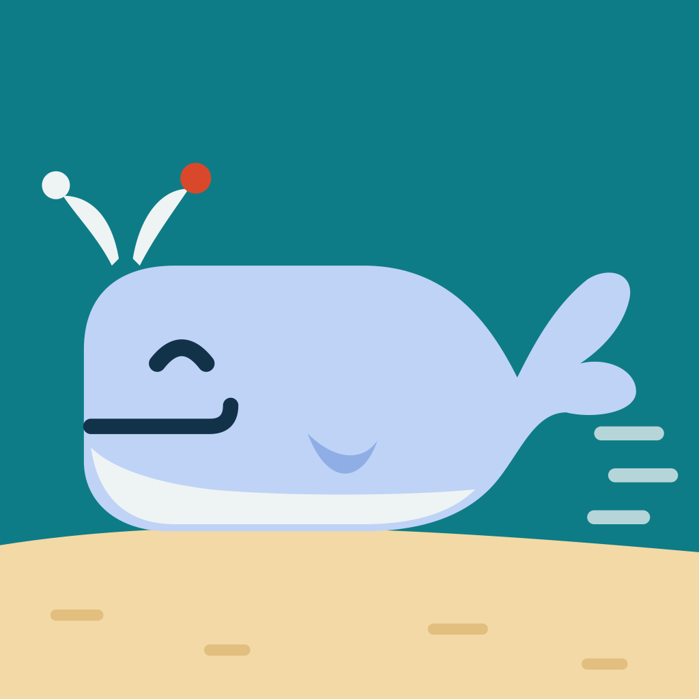

Press kit
Everything you need to write about MeelMore. Use any of it freely.
The app icon at 1024 × 1024, a wide banner, nine iPhone screenshots and nine iPad screenshots at full size, and this fact sheet as text. For anything else, such as a promo code or an interview, email support@meelmore.app.
In one line
MeelMore is a calm to-do list for iPhone and iPad that shows just three things to do now, and keeps everything else out of the way until it matters.
In a paragraph
MeelMore is made for brains that see time as either NOW or NOT NOW. Instead of a long list, it shows three tasks to do now, picked from dates, routines and what you said matters today. Everything else waits on its own page. You can type a task or just say it, and Apple Intelligence on the device tidies the title, picks up dates and routines, and breaks big tasks into small steps you can actually start. There's no account, no ads and no tracking: every task stays on the iPhone or iPad, and nothing is sent to a server. Every feature is free, with an optional tip jar.
Fact sheet
| Name | MeelMore (one word, two capital Ms) |
|---|---|
| Developer | Audiograins, an independent developer |
| Released | November 5, 2026 |
| Platforms | iPhone and iPad, iOS and iPadOS 26 or later |
| Price | Free, with no ads or subscription; optional tips from $0.99 to $9.99 |
| Category | Productivity |
| Languages | English |
| Privacy | Data Not Collected (no account, no server, no analytics) |
| App Store | apps.apple.com/app/meelmore/id6826042139 |
| Website | meelmore.app |
What makes it different
- Three things, not thirty. Now shows a short list, so there's no scrolling and no deciding where to start. A Warm Me Up button swaps in the three easiest tasks for a few quick wins first.
- Plans, not just deadlines. Most dates are a plan. When one passes, MeelMore asks what you'd like to do instead of piling up overdue tasks. Real deadlines still get Due and Overdue.
- Just say it. Tap the microphone once and talk; MeelMore saves the task when you stop, so it works in the car or from the Action Button. "Gym every Tuesday at 6pm" becomes a routine.
- Big tasks, small steps. One tap breaks a task into two to six steps you can actually start. If the task has a date, each step gets its own date in the days before it.
- On-device AI. Built on Apple's Foundation Models framework and on-device speech recognition. On a device without Apple Intelligence, MeelMore works fully in a simple mode.
- Private by design. No account, no ads, no tracking. Tasks never leave the device.
The name
MeelMore comes from the Irish míol mór, whale, and the saying "keep kicking the whale down the beach": big things move a little at a time. That's why the icon is a smiling whale.
Screenshots
Full-size iPhone (1320 × 2868) and iPad (2064 × 2752) screenshots are in the press kit.

Now: three things to do 
Say a task 
Break it down
Icon

Download the icon (PNG, 1024 × 1024). Please show it as it is, without changing its colors or adding effects. The App Store and iOS add the rounded corners.

A note on ADHD
MeelMore is made with ADHD brains in mind, but it isn't a medical app and doesn't treat or diagnose anything. "A to-do list made for ADHD brains" is accurate; "an ADHD treatment" isn't.